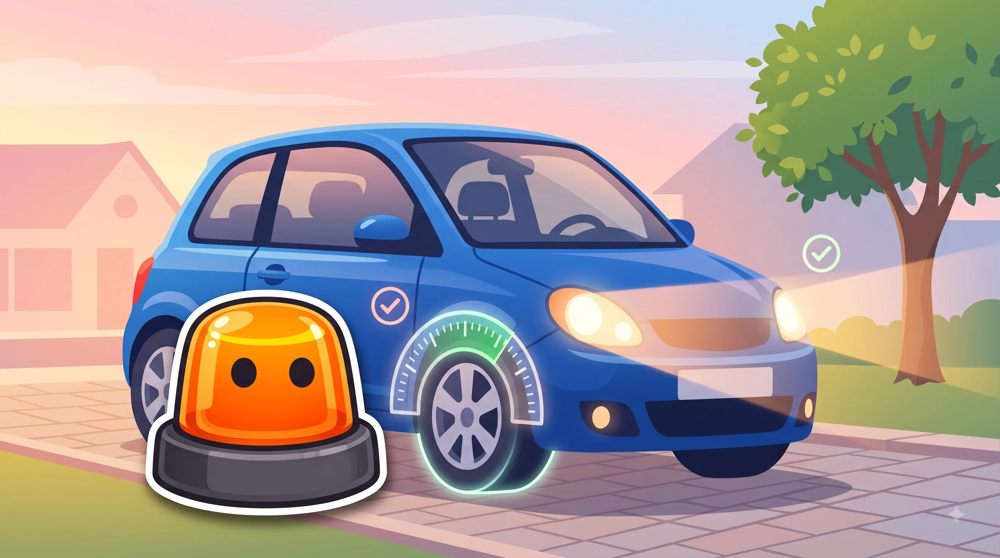
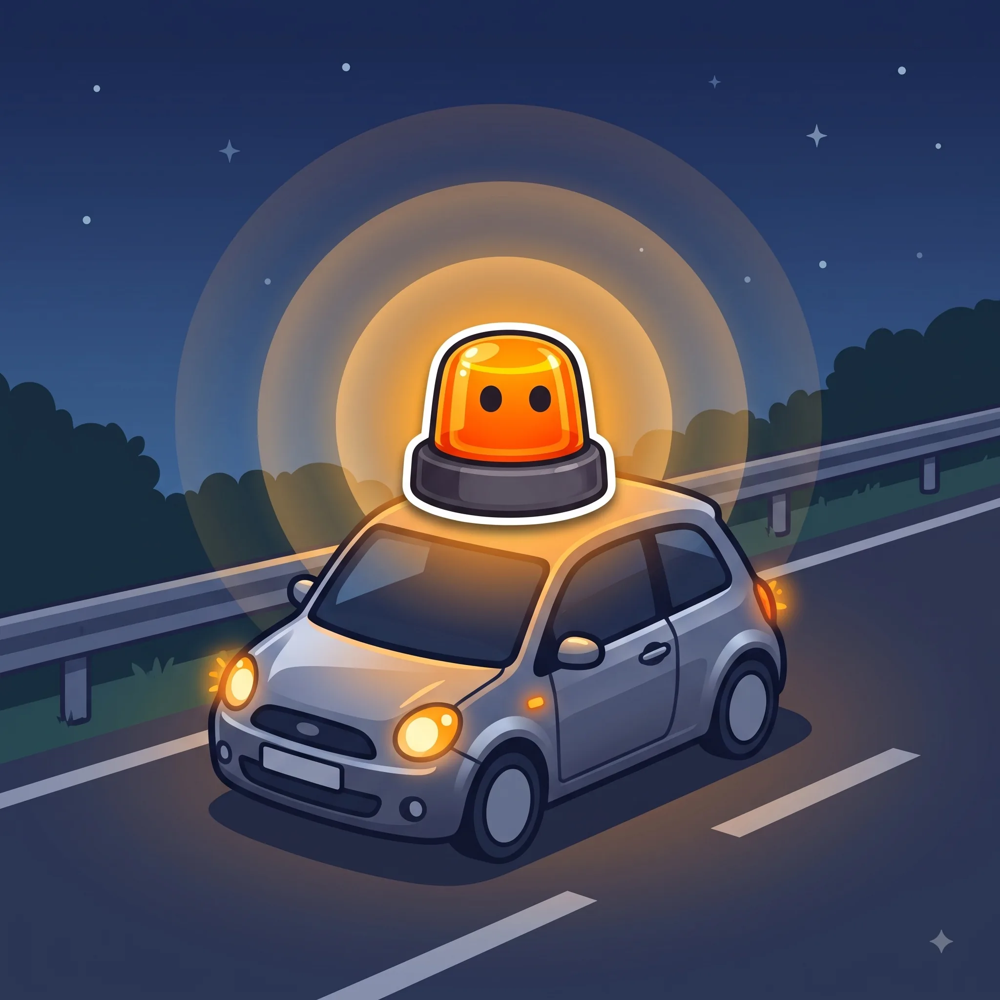

Esto es el repaso. Para aprobar a la primera, hace falta algo más.
Tests oficiales, modo examen cronometrado y tu progreso guardado.

Lo mínimo que debes revisar antes de coger el coche.
Obligatoria desde el 1 de enero de 2026
Ya no son obligatorios, pero se pueden seguir usando
| Baliza V16 conectada | Triángulos | |
|---|---|---|
| ¿Es obligatoria? | Sí, desde el 1 de enero de 2026 | No, desde que la V16 es obligatoria |
| ¿Dónde se coloca? | En el techo del vehículo | En la calzada, delante y detrás |
| ¿Hay que bajarse a la calzada? | No, se activa sin salir a la vía | Sí, hay que caminar por la calzada para colocarlos |
| ¿Se pueden usar juntos? | Sí, no supone sanción | Sí, no supone sanción |
La moneda de 1 euro no miente.
Si al meterla en la ranura del neumático se ve el borde dorado, el dibujo ya está por debajo del mínimo legal de 1,6 mm.
La V16 se enciende sin bajarte del coche.
A diferencia de los triángulos, no hace falta caminar por la calzada para colocarla: se activa y se pone en el techo.
4, luego cada 2, luego cada año.
Así de simple es la periodicidad de la ITV para un turismo: primera inspección a los 4 años, cada 2 años hasta los 10, y cada año a partir de ahí.

La forma y el color ya te dicen el mensaje antes de leer nada.
A más velocidad, la frenada crece mucho más rápido que la reacción.
Líneas, flechas y símbolos pintados en el asfalto, con su propio código.
Las reglas base que deciden por ti cuando no hay ninguna señal.
Cuándo, cómo y dónde se puede adelantar con seguridad.
Quién pasa primero en cruces y glorietas.
Incorporaciones, carriles y normas específicas de vías rápidas.
Tasas máximas y por qué te la juegas más de lo que crees.
Proteger, avisar y socorrer, en ese orden.
Cómo funciona el sistema de puntos y qué te los quita.
Las situaciones que no siguen la norma "de manual".
Tests oficiales, modo examen cronometrado y tu progreso guardado.